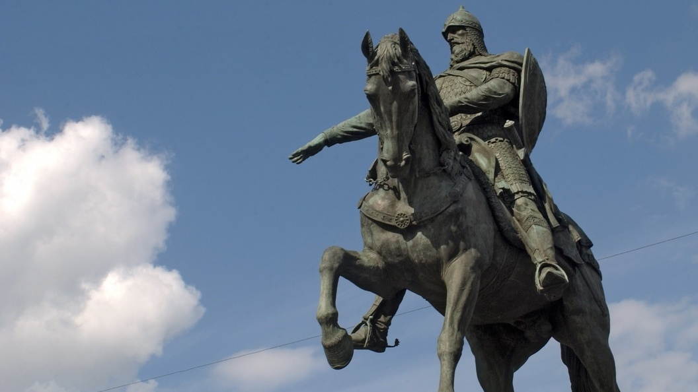
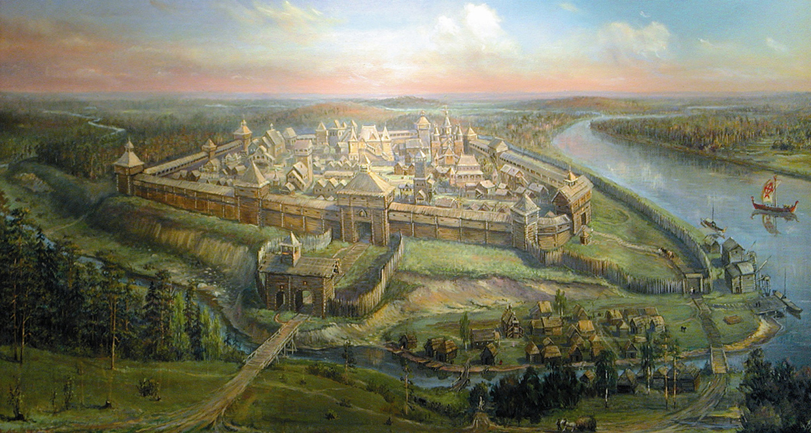
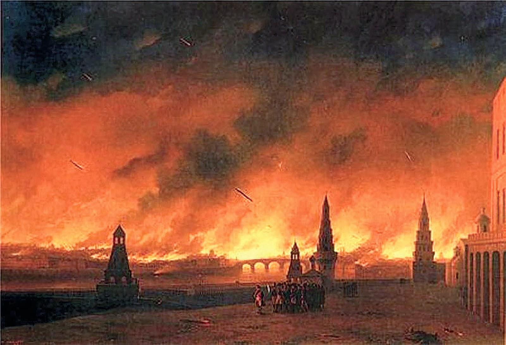
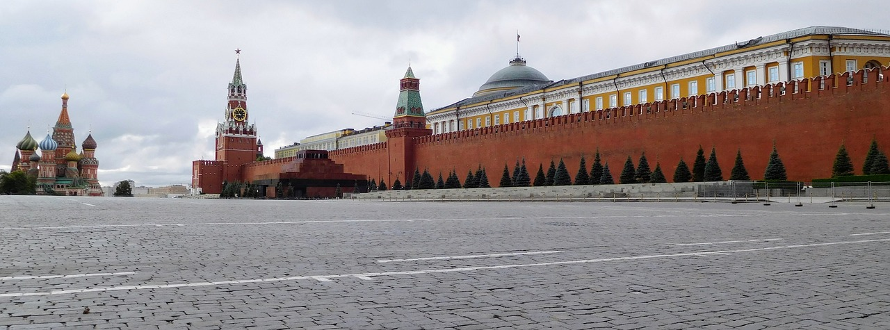

История Москвы
Исто́рия Москвы́ — крупнейшего города и столицы России — насчитывает, по крайней мере, 876 лет.
Основание Москвы
Основание Москвы датируется 1147 годом и приписывается Великому князю Киевскому Юрию Долгорукому. На момент основания Москвы Юрий был только князем Ростово-Суздальским. В Ипатьевской летописи упоминание Москвы датируется 1147 годом, когда Юрий Долгорукий пригласил новгород-северского князя Святослава Олеговича: «приди ко мне брате в Московь».
 Становление Москвы
В XIV веке Москва стала стремительно меняться. Стены крепости московской при Иване Калите перестроили на новые — дубовые, а к 1367 году по указу князя Дмитрия Донского были возведены белокаменные стены.

Переходным моментом для Москвы стала победа в Куликовской битве 1380 года. После этого город получил статус столицы Руси, а во время правления великого князя Ивана III Васильевича — Русского государства.
Московский Кремль

В 1485 году Иван III пригласил в Москву итальянский зодчих и приступил к невиданному в те времена строительству — нового Кремля. В течение следующих 30 лет были возведены все стены Кремля и выстроены все башни.
Москва перестаёт быть столицей
На время правления Петра I Москва перестала быть столичным городом. Не любил Петр I Москву, а был увлечен возведением нового современного города на Неве (быть ближе к Европе). И Москва на долгие десятки лет остановилась в развитии.
В 1737 году неприятности продолжались для Москвы, крупнейший пожар, почти уничтожил весь город.
События 1812 года в Москве
После сражения в Бородино 2 сентября 1812 года Наполеон с французской армией вступил в оставленный населением и войсками город, в котором почти сразу начался, такой очередной в истории Москвы, пожар, раздутый на многие строения сильным ветром.
Восстановление Москвы
В городе сгорело около 70% всех домов и строений. Просто так отстроить заново Москву было непросто, предусматривалась перепланировка многих районов.
После тех печальных событий Отечественной войны к концу 1820-х годов Москва была восстановлена полностью и продолжала стремительно развиваться.
Москва — столица нового государства

Новая власть в городе была установлена 3 ноября 1917 года, и в марте 1918 года из Петербурга переехало в Москву правительство во главе с Владимиром Ильичом Лениным. Москва была объявлена столицей нового государства.
Современная Москва

Москва́ — столица России, город федерального значения, административный центр Центрального федерального округа и центр Московской области, в состав которой не входит. Крупнейший по численности населения город России. Самый населённый из городов, полностью расположенных в Европе. Самый крупный город Европы по площади.
5 главных храмов Москвы
Топ-5 храмов Москвы:
-
Храм Василия Блаженного
Официальное название храма – собор Покрова на Рву. Но все знают его под именем собора Василия Блаженного – его храм получил в честь московского чудотворца, признанного святым. Из-за красоты своей архитектуры и внутреннего убранства, храм стал визитной карточкой Москвы. Внутри сохранились росписи XVI-XVIII века. Это не один храм, а 8 церквей, соединенных переходами в единую композицию.
-
Храм Христа Спасителя
Это один из самых молодых храмов Москвы, построенный на месте ранее взорванного собора. Сейчас это кафедральный собор, где регулярно проводятся богослужения патриархом. В храме находится множество святынь православной церкви. Богатое убранство производит впечатление на каждого посетителя. При соборе основан Музей церковного искусства, где хранятся уникальные работы.
-
Казанский собор
Этот храм на Красной площади сразу обращает на себя внимание. Цветовая гамма (белый, красный и золотой цвета) была выбрана не случайно – каждый из этих цветов имеет свое значение в церковном искусстве. Собор богато украшен настенными росписями и другими элементами декора. Внутри хранится Казанская икона Божьей Матери, которая признана чудотворной среди верующих, и другие церковные святыни.
-
Успенский собор
Собор представляет собой уникальный архитектурный памятник XV века. Фрески храма сохранились с XV-XVI вв., и благодаря работе реставраторов, приобрели первоначальный вид. Собрание икон, самые древние из которых датируются XI веком – одно из богатейших в мире. Южные двери храма сохранили на себе более 20 старинных фресок на библейские темы. В храме со времен Ивана Грозного происходили коронации русских царей, кроме Петра I и Екатерины I.
-
Благовещенский собор
Храм построен при Иване Грозном. Его знаменитые росписи на стенах и потолке выполнены известными мастерами той поры – Андреем Рублевым, Феофаном Греком и др. Несмотря на перестройки собора, роспись возобновлялась каждый раз в точности по образцу старой. Каменный храмовый пол с вкраплениями яшмы и агата по легенде был привезен из Византии. Иконостас алтарной части превышает 2 метра в высоту и состоит из 5 ярусов.
5 главных музеев Москвы
Топ-5 музеев Москвы:
-
Музеи Московского Кремля
Год основания – 1806, но в нынешнем виде существуют с 1991. В общий комплекс входят несколько зданий, у каждого своя экспозиция и специализация. Оружейная палата выполняет также функцию сокровищницы. В ней хранятся подарки царской семье, монаршая символика и прочие ценности. Алмазный фонд – выставка предметов ювелирного искусства. Здесь же находятся православные соборы: Успенский, Архангельский, Благовещенский, а также Церковь Ризоположения. Особые реликвии – иконостасы и могилы царей. В Патриарших палатах проходят выставки, как и в Колокольне «Ивана Великого». Верхние этажи отведены под музей архитектуры самого кремля.
-
Государственный исторический музей
Основан в 1872 году, спустя три года переехал в нынешнее здание. Экспозиция музея показывает историю от древнейших времён до современности. Фонды музей настолько велики, что выставить одновременно можно менее процента от общего их количества. Здесь вобраны: иконы, драгоценности, монеты, керамика, копии интерьеров знаковых мест, карты, документы и многое другое.
-
Третьяковская галерея
Открыта в 1856 году. Художественный музей, получивший имя в честь своего основателя. На территории галереи работает постоянная экспозиция, включающая в себя образцы отечественной живописи разных школ и периодов. Особенно ценными и известными считаются полотна Репина, Крамского, Шишкина, Васнецова и других. Помимо картин в собрание входят и иконы. Также здесь проводятся временные выставки.
-
Музей Победы
Открыт в 1995 году. Включает несколько тематических залов. В Зале Славы увековечены герои страны. В Зале Полководцев – кавалеры ордена «Победа». Зал Памяти и Скорби предназначен для почитания миллионов граждан, погибших во время ВОВ. Здесь также собрана коллекция предметов, рассказывающих о войне. В музее ведётся «Книга памяти». Рядом в парке выставлена военная техника.
-
Дарвиновский музей
Год основания – 1907. В самом конце прошлого века музей получил новое здание. Является самым крупным в Европе музеем естественных наук. Экспонаты рассказывают об эволюции и связанных с ней процессах. Выставка довольно современна: в залах есть компьютеры, помогающие разбираться с полученным материалом самостоятельно. Музей рекомендован для посещения с детьми.
5 лучших театров Москвы
Топ-5 театров Мосвквы:
-
Большой театр
Один из самых известных в мире оперы и балета и символ культурного достояния России. Изображение театра нанесено на сторублёвую купюру. Но, если говорить о размерах, то Большой — вовсе не самый крупный в России: габаритами его превосходит Новосибирский театр оперы и балета.
-
Малый театр
Сосед Большого на Театральной площади и старейший драматический театр в столице. В самом центре Москвы находится основная сцена — в историческом здании XIX века, а на Большой Ордынке — вторая.
-
Российский академический молодёжный театр (РАМТ)
Можно сказать, что это «младший брат» Большого и Малого театров, замыкающий Театральную площадь. Автором идеи и основательницей РАМТ стала Н. И. Сац, которая известна как первая в мире женщина — оперный режиссёр. Именно в этом театре начали создавать специальные постановки, ориентированные на юного зрителя. Сегодня это один из главных культурных центров для молодёжи в городе.
-
Московский театр оперетты
Находится недалеко от Большого и интересен любителям более лёгкого музыкального жанра, чем опера. Основанный в 1927 году театр стал одним из самых значимых и востребованных у столичной публики: ежегодно его посещают более полумиллиона человек. Здание принадлежит к памятникам архитектуры XIX столетия.
-
МХТ им. А. П. Чехова
Создателями и идейными вдохновителями этого культового столичного театра стали мэтры русского искусства К. С. Станиславский и В. И. Немирович-Данченко. Свои двери театр, названный тогда Московским художественным, открыл в 1898-м. В 1919 году в его названии появилось слово «академический». Театр расположился в здании, которое было перестроено архитектором Ф. О. Шехтелем. По его же чертежам оформили и интерьеры. Станиславский отмечал, что дом буквально превратили в «изящный храм искусства», при этом Шехтель выполнил свою работу безвозмездно.